Lesson 11 · Part 1 · The harness · 5 questions
Hooks and permissions: rules that always run
Read first: Tool calls up close
A line in CLAUDE.md is a request the model follows most of the time. A permission rule or a hook is code the harness runs on every tool call, step 3 or step 300, so the rules you can't afford to see broken belong there.
The idea
Picture a new joiner on day one. You tell them "never push straight to main". They nod, and they mean it. Three weeks later, in a hurry at 6 pm, they push to main. That's why the repository has branch protection: the server refuses the push, however busy or tired the person is.
An agent is that new joiner, with a worse memory. Your instruction is one paragraph among thousands of tokens of code, logs and tool results, and it competes with the task in front of it. Most of the time the model follows it. "Most of the time" is fine for style and bad for anything that breaks production.
Recall from An agent is a while loop that the model only writes a tool call; the harness runs it. So the harness can check every call before and after it runs, and that check doesn't depend on what the model remembers. Claude Code gives you two such checks:
- Permission rules: patterns in a settings file that allow, ask about or deny a tool call. No code needed.
- Hooks: your own scripts that the harness runs at fixed points, such as just before a tool call (
PreToolUse) or just after one (PostToolUse). The script reads the call as JSON and decides.

Claude Code's permission docs say it plainly: rules are enforced by Claude Code, not by the model, and instructions in your prompt or CLAUDE.md "don't change what Claude Code allows".
Up close
Permission rules live in .claude/settings.json (commit it, and the whole team gets them) or in your personal settings:
{
"permissions": {
"allow": [
"Bash(npm run *)",
"Bash(git commit *)"
],
"deny": [
"Bash(git push *)",
"Read(./.env)"
]
}
}Rules are checked in a fixed order: deny, then ask, then allow, and the first match wins. A deny always beats an allow, however specific the allow is. Your organisation can also push managed settings that no project or user file can override.
Hooks handle what a pattern can't express. Say your team's rule is "never edit a migration that's already committed; write a new one". A folder pattern can't tell old files from new ones, but a ten-line script can:
#!/bin/bash
# hooks/mig.sh: runs before each edit
f=$(jq -r '.tool_input.file_path')
case "$f" in
*/migrations/*) ;;
*) exit 0 ;;
esac
# a file git doesn't track is new: OK
git ls-files --error-unmatch "$f" \
>/dev/null 2>&1 || exit 0
echo "Blocked: $f is committed and" \
"may already have run. Write a" \
"new migration instead." >&2
exit 2Register it under "hooks" in the same settings file. The matcher picks which tools trigger it:
"PreToolUse": [{
"matcher": "Edit|Write",
"hooks": [{
"type": "command",
"command":
"$CLAUDE_PROJECT_DIR/hooks/mig.sh"
}]
}]The exit code is the whole contract:
- Exit 0: no objection. The call carries on to the permission rules.
- Exit 2: block. Whatever the script wrote to stderr goes back to the model as the reason, so it can change course. Write it like a good tool error (see Tool calls up close): say what to do instead.
- Any other code: a non-blocking error. You see a "hook error" notice and the call goes ahead.
A PostToolUse hook runs after the tool, so it can't stop anything; the edit has already happened. Its job is feedback. Claude Code's hooks guide uses exactly this as an example: run Prettier on every file the agent edits, so formatting is never a review comment. A lint hook works the same way, and exit 2 puts the linter's complaints in front of the model right after the edit:
#!/bin/bash
# hooks/lint.sh: runs after each edit
f=$(jq -r '.tool_input.file_path')
case "$f" in *.py) ;; *) exit 0 ;; esac
ruff check "$f" >&2 || exit 2There is also a Stop hook, which runs when the agent tries to finish. Exit 2 there sends it back to work, for example while the tests are red.
Two warnings. Hooks run as you, with your full user permissions, so review a repository's hooks like any script before you trust it. And a hook on Edit|Write doesn't see files changed by a shell command or a Python script. Other harnesses have the same idea under other names: Cursor has beforeShellExecution and afterFileEdit hooks, and Gemini CLI has BeforeTool and AfterTool, where exit 2 also blocks.
Where a rule should live
| Written as | Enforced by | What slips past |
|---|---|---|
| A line in CLAUDE.md | The model, when it remembers | Anything, on a bad day |
| Permission rule | Harness, every call | Commands written another way |
| Hook | Harness, your logic | Tools the hook doesn't watch |
| CI check, branch protection | The server | Nothing the agent can reach |
Use all four. CLAUDE.md explains why, so the agent rarely hits the wall. Hooks and rules catch it fast, while the file is still in its context. CI catches whatever got past your laptop.
Your turn
Question 1 · ~2 min
Your CLAUDE.md says "Never edit existing migrations." Two hours into a long session, asked to fix a column type, the agent edits V12__orders.sql, which already ran in production. Did it ignore you, and what would have stopped it?
Show answer
It didn't ignore you. It weighed your sentence against the task and lost. An instruction is one paragraph among a lot of context, and "fix the column type" pointed right at that file. A PreToolUse hook on Edit|Write would have blocked the edit every time, and its stderr ("write a new migration instead") tells the agent exactly what to do next. Keep the CLAUDE.md line too: it explains why, so the agent usually gets it right first.
Question 2 · ~2 min
A teammate adds a PostToolUse hook that runs the linter after each edit. On lint errors the script ends with exit 1. You see "hook error" notices in the session, but the agent never fixes the lint errors. Why?
Show answer
Exit 1 is a non-blocking error. Claude Code shows you a notice and carries on; the linter's output doesn't come back to the model as feedback. Exit 2 is the code that sends stderr to the model. Change it, and print the errors to stderr: the agent then fixes them right after each edit, while the file is still fresh, instead of you finding them in CI.
Question 3 · ~2 min
To keep the agent away from .env, you write a PostToolUse hook on Edit|Write that exits 2 when the path ends in .env. The agent then edits .env anyway, and the file really changes. What went wrong?
Show answer
Post means after: the edit had already happened. A PostToolUse hook can only report back to the model; it can't undo the tool. To stop an action, use a PreToolUse hook or, simpler here, a deny rule such as Read(./.env), which also blocks editing that file.
Question 4 · ~3 min
You add the deny rule Edit(db/migrations/**) to protect old migrations. The next day the agent can't finish a ticket that needs a new column. Why, and what's better?
Hint
Show answer
The rule blocks the whole folder, including the new file the ticket needs. A permission rule only sees the tool and the path. "Old" versus "new" is a fact about git history, and checking it takes code. A hook can run git ls-files, let new files through and block committed ones, with a message that says "write a new migration instead". Use rules for "never touch this", and hooks for "touch this only when…".
Question 5 · ~3 min
Stretch: you deny Bash(git push *). The agent's push is blocked, and a few steps later it runs git -C . push origin main, which goes through. Is the rule broken?
Hint
Show answer
No, it works as documented. A Bash rule matches the command text the model writes, and Claude Code's docs list git -C . push as one of the forms Bash(git push *) doesn't stop. They say such rules aren't a security boundary around the program. Rules and hooks catch the usual mistakes cheaply. For a rule that must hold, put it where the agent can't reach: branch protection on the server, the CI pipeline, or Claude Code's sandbox, which limits files and network at the operating-system level.
Interesting fact: Yelp's copy-pasted bash scripts
Git has long supported "hooks": scripts in .git/hooks that fire at fixed points, such as pre-commit, which can abort a commit by exiting non-zero. Sharing them was painful, because that folder isn't part of what you commit. In March 2014 two Yelp engineers, Anthony Sottile and Ken Struys, started the pre-commit framework. Its 2014 README explained why: "At Yelp we rely heavily on pre-commit hooks", so reviewers can look at the architecture of a change instead of trivial errors, but "we copied and pasted bash scripts from project to project". pre-commit turned hooks into a config file in the repo, and the project now has over 15,000 stars on GitHub. Git's own manual notes the catch: the pre-commit hook "can be bypassed with the --no-verify option". That's why teams run the same checks again in CI, and why your agent's hooks need a CI twin too.
Facts checked: November 2026 (Claude Code docs: hooks guide, hooks reference, permissions; Cursor hooks docs; Gemini CLI hooks reference; git-scm githooks; pre-commit README, 2014).
Answers
- Question 1
It didn't ignore you. It weighed your sentence against the task and lost. An instruction is one paragraph among a lot of context, and "fix the column type" pointed right at that file. A
PreToolUsehook onEdit|Writewould have blocked the edit every time, and its stderr ("write a new migration instead") tells the agent exactly what to do next. Keep the CLAUDE.md line too: it explains why, so the agent usually gets it right first. - Question 2
Exit 1 is a non-blocking error. Claude Code shows you a notice and carries on; the linter's output doesn't come back to the model as feedback. Exit 2 is the code that sends stderr to the model. Change it, and print the errors to stderr: the agent then fixes them right after each edit, while the file is still fresh, instead of you finding them in CI.
- Question 3
Post means after: the edit had already happened. A
PostToolUsehook can only report back to the model; it can't undo the tool. To stop an action, use aPreToolUsehook or, simpler here, a deny rule such asRead(./.env), which also blocks editing that file. - Question 4
The rule blocks the whole folder, including the new file the ticket needs. A permission rule only sees the tool and the path. "Old" versus "new" is a fact about git history, and checking it takes code. A hook can run
git ls-files, let new files through and block committed ones, with a message that says "write a new migration instead". Use rules for "never touch this", and hooks for "touch this only when…". - Question 5
No, it works as documented. A Bash rule matches the command text the model writes, and Claude Code's docs list
git -C . pushas one of the formsBash(git push *)doesn't stop. They say such rules aren't a security boundary around the program. Rules and hooks catch the usual mistakes cheaply. For a rule that must hold, put it where the agent can't reach: branch protection on the server, the CI pipeline, or Claude Code's sandbox, which limits files and network at the operating-system level.